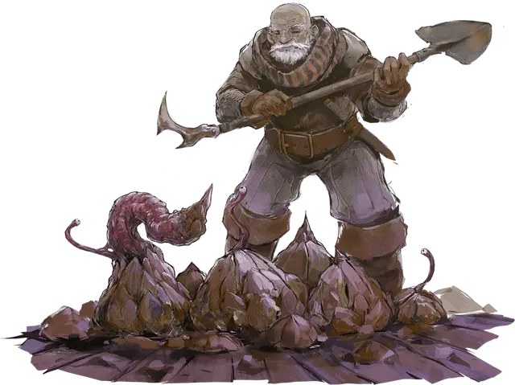

Корабельная пиявка
Jammer Leech
Крошечное Растение, без мировоззрения

Класс Доспеха 12 (природный доспех)
Хиты 27 (5к4 + 15)
Скорость 10 футов
| мод | спас | ||
|---|---|---|---|
| СИЛ | 11 | +0 | +0 |
| ЛОВ | 1 | −5 | −5 |
| ТЕЛ | 16 | +3 | +3 |
| мод | спас | ||
|---|---|---|---|
| ИНТ | 1 | −5 | −5 |
| МДР | 10 | +0 | +0 |
| ХАР | 1 | −5 | −5 |
Иммунитет к состояниям испуг, очарование, сбивание с ног
Чувства тёмное зрение 30 футов, пассивное Восприятие 10
Опасность 1 (200 опыта)
Бонус мастерства +2
Особенности
Перегрузка рулевого. Если хиты пиявки опускаются до 0, пока она прицеплена к кораблю с магическим рулем [spelljamming helm], существо настроенное на штурвал должно совершить спасбросок Телосложения Сл 13. При провале, существо получает 10 (4к4) урона психической энергией и становится недееспособным на 1 минуту. При успехе, существо получает половину этого урона и становится недееспособным до конца своего следующего хода.
Необычная природа. Пиявка не нуждается в воздухе и сне.
Действия
Шипастое щупальце. Рукопашная атака оружием: +2 к попаданию, досягаемость 5 фт., одна цель. Попадание: 2 (1к4) колющего урона.
Бонусные действия
Присоединение к корпусу. Пиявка прикрепляется к корпусу корабля в его пространстве и причиняет 2 (1к4) колющего урона (игнорируя порог урона корабля). Этот урон не может быть восстановлен, пока пиявка не будет соскоблена с корпуса. Пока пиявка прицеплена, ее скорость равна 0, и она может отсоединиться бонусным действием. Действием, существо в пределах досягаемости пиявки, может попытаться соскрести её с корпуса, преуспев в проверке Силы Сл 18. При провале, действие тратится впустую, а пиявка остается прицепленной к корпусу. Удаление пиявки таким образом не наносит урона ни кораблю, ни ей.
Реакции
Магическая разрядка (1/день). Когда пиявка получает урон, она может выпустить из своего глаза снаряд магической энергии, выбрав в качестве цели одно существо, которое она может видеть, в пределах 30 футов. Цель должна преуспеть в спасброске Ловкости Сл 13, иначе получит 10 (3к6) урона силовым полем и станет ошеломлённой до конца своего следующего хода.
Описание
Корабельная пиявка — существо, похожее на усоногого рака. Она начинает свою жизнь в виде живущей в космосе споры, которая закрепляется на корпусе чарохода. Внутри неё и находится личинка пиявки. Спустя несколько дней прицепившейся спора пробивает корпус корабля и начинает формировать твердый панцирь, цвет которого очень близок к цвету корпуса. Панцирь прикрепляется к кораблю с помощью вещества, похожего на клей, выделяемого пиявкой. Панцирь растет, пока не станет около 1 фута в диаметре. Внутри него живет пиявка красновато-фиолетового цвета, а её тело напоминает улитку. На одном её конце расположен единственный слезящийся глаз, а чуть ниже него торчит шипастое щупальце, используемое им для самозащиты.
Спарившаяся пара пиявок производит 1к6 спор каждый месяц. Некоторые из этих спор присоединяются к своим родителям на корпусе корабля, другие же улетают, чтобы прикрепиться к другому неосторожному судну.
Корабельная пиявка повреждает корпус корабля, к которому она прицепилась, а также поглощает магию из штурвала чарохода [spelljamming helm]. В качестве защитной меры, она может разрядить эту магию. Как правило, если экипаж корабля обнаруживает прицепившихся пиявок, он пытается соскрести их с корпуса, а не нападать на них с оружием. Убивать пиявку, пока она прицеплена к кораблю, опасно, так как рулевой может почувствовать её смерть, и получить от этого травму. Этот шок может ослабить и сделать его недееспособным.